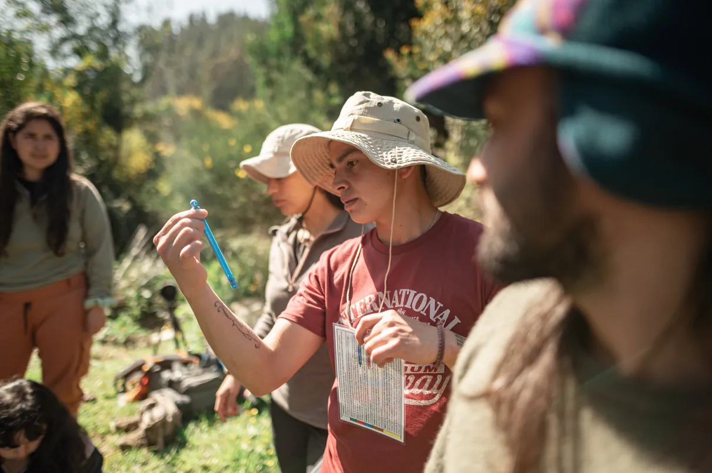

Observa pH, temperatura, turbidez, oxígeno disuelto, alcalinidad y dureza del agua mediante instrumentos de campo.
Utiliza tarjetas de cultivo R-CARD para observar bacterias indicadoras, siguiendo protocolos de incubación y lectura.
Identifica organismos acuáticos y su sensibilidad a cambios del entorno para interpretar condiciones ecológicas.


Una red que observa, aprende y cuida.
Global Water Watch Chile reúne organizaciones que monitorean ríos, lagunas, lagos y humedales mediante metodologías científicas compartidas.
Fundación Manzana Verde coordina este trabajo con comunidades que generan conocimiento desde sus propios territorios.
Ciencia comunitaria · Formación · Colaboración
Organizaciones que comparten herramientas y conocimiento para cuidar las aguas dulces.
Qué hacemos
Observamos el agua, compartimos conocimientos y fortalecemos el trabajo comunitario.
Memoria institucional 2024
Mapa del agua
Explora cuerpos de agua y sus antecedentes territoriales.
Cargando mapa…
Cómo sumarse
Si tu organización busca conocer y proteger un río, lago, laguna o humedal, conversemos sobre el monitoreo comunitario, la formación y las formas de colaboración territorial.
Escríbenos